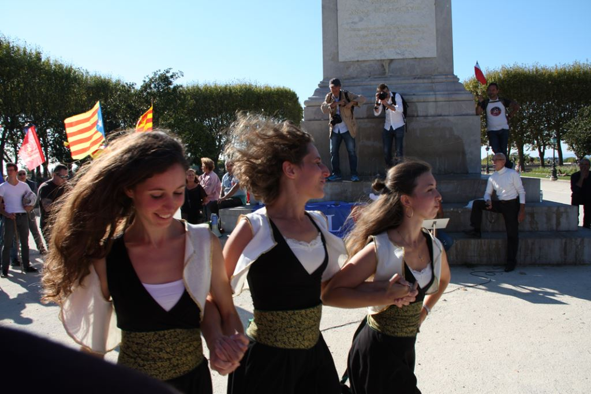
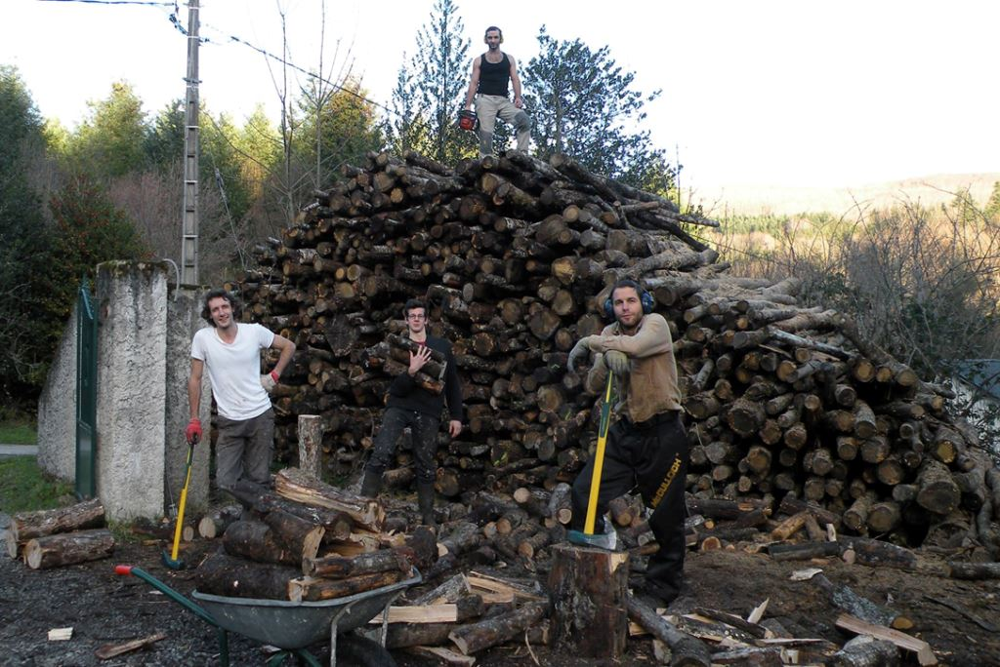
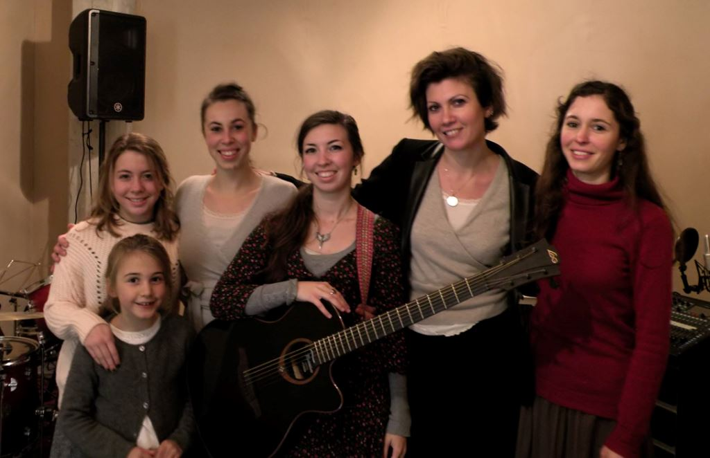
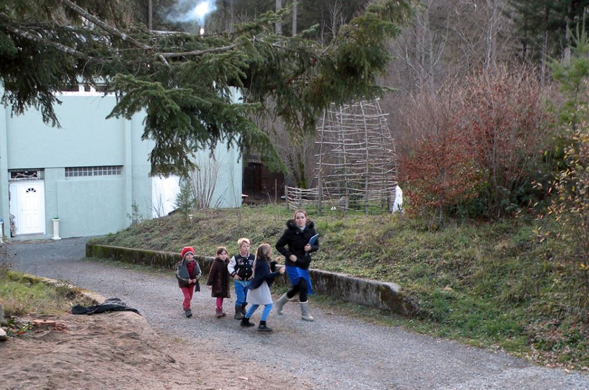
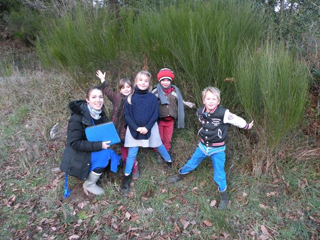
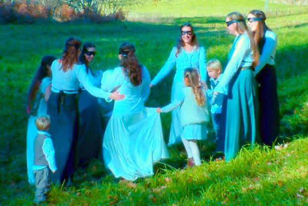

Après notre voyage au Donbass en octobre 2016, la directrice de la rédaction de ce journal, Elena Sydorova, nous a proposé de présenter notre mode de vie communautaire en plusieurs articles. Nous pensons avec elle qu’il est intéressant de présenter aux russes l’alternative de vie que nous développons en France car les Slaves sont mieux disposés à accueillir positivement ce qui relève d’un mode de vie communautaire que les gens de l’Ouest.
Nous présenterons donc sur plusieurs numéros notre vie en clan, les raisons qui nous poussent à développer ce mode de vie et les perspectives qui peuvent s’offrir à ceux qui s’organisent de cette manière.
QU’EST-CE QU’UN CLAN ?
Un clan est une communauté humaine réunie dans une même zone géographique, et partageant une culture et un ordre social fraternel. Le clan, dans le sens communautaire où nous l’entendons, est indissociable des notions fraternelles de solidarité, de partage, d’esprit de corps. On peut dire qu’au niveau de l’organisation, un clan est semblable à une caserne de civils ou un monastère laïc qui comprendraient des familles, car ses membres sont soudés autour d’un même idéal de vie.
C’est cela un clan : un collectif animé par un esprit de corps qui choisit de vivre autrement, de dire non à l’isolement et à la faiblesse individuelle.
LE RASSEMBLEMENT EN CLAN
Le rassemblement clanique est basé sur un rejet de l’individualisme de l’homme moderne qui est la pierre d’angle de notre civilisation. Nous rejetons les valeurs négatives, égocentriques et matérialistes de notre société car l’être humain est fait pour vivre en collectivité fraternelle. Nous ne voulons pas devenir des robots sans conscience, consuméristes et standardisés sous le rouleau compresseur mondialiste ! Nous aspirons au contraire à une vie digne partagée avec nos semblables dans un esprit communautaire.
Notre démarche est simple : « La société actuelle ne nous plaît pas ? Nous n’avons qu’à en recréer une autre ! » C’est le message que nous voulons faire passer : si vous voulez vivre en cohérence avec vos principes, rassemblez-vous entre personnes partageant les mêmes valeurs.
Notre groupe expérimente la possibilité d’un mode de vie différent du mode de vie individualiste. Nous pensons que cette initiative avant-gardiste pourra servir de modèle pour ceux qui aspirent à un autre modèle social et culturel !
NOTRE CLAN
Notre clan est un regroupement de familles comportant une vingtaine de personnes et une dizaine d’enfants. Nous sommes rassemblés sur la même commune dans six maisons différentes au cœur de la Montagne Noire en France.
Trois familles vivent ensemble dans notre demeure principale, où se trouvent aussi nos bureaux et lieux de travail, et les autres familles ont leur maison à proximité du village, à 10 minutes du « centre communautaire ».
Notre clan s’est formé en 2004, sous l’impulsion de Joël Labruyère, écrivain, auteur-compositeur des chansons des Brigandes et concepteur de l’idée de « communautés du futur ». La civilisation a atteint un tel point de dégénérescence, tout en évoluant vers une tyrannie technocratique, que les êtres qui refusent ce modèle aliénant, n’auront bientôt plus d’autre choix que de se rassembler par petites unités de plusieurs familles pour recréer une société véritablement humaine. Notre clan s’est formé sur cette idée, aussi bien pour anticiper le futur que pour trouver une solution à la crise de la civilisation du matérialisme effréné et du profit. Nous nous basons en outre sur certaines prophéties alarmistes en ce qui concerne le futur de la Terre. Au rythme où se développe la technologie du contrôle mental, le pire est à craindre.
Après un travail de formation et de consolidation de plusieurs années, notre noyau clanique fonctionne autour de plusieurs perspectives concrètes : micro-ferme, école hors-contrat pour nos enfants, création artistique, le groupe musical des Brigandes, etc. – toutes ces activités mobilisant les adultes selon leurs compétences. Chacun fait ce qu’il aime faire.
S’ORGANISER ÉCONOMIQUEMENT : UN SOCIALISME FRATERNEL
« Comment survivons-nous ? » est la question que l’on peut se poser. Certains membres du groupe apportent de l’argent grâce à leurs capacités professionnelles : traducteurs, architecte des monuments historiques, musiciens… et d’autres se consacrent uniquement au travail du clan, de la communication et de la musique. Chacun est pris en charge économiquement. C’est un véritable socialisme, pas celui de l’assistanat ni d’un État s’imposant à tous par la force. L’idée communiste s’applique aux biens matériels : maisons, appareils, voitures, etc, qui sont à la disposition de tous, mais chacun dispose librement de ce dont il a besoin personnellement. Chacun a son propre compte bancaire d’où il prélève sa participation au clan. Celui qui ne possède rien en propre dispose de tout ce qui nécessaire comme les autres.
La condition pour vivre dans notre clan est d’être mobilisé par un idéal de construction sociale novatrice : il n’y a pas de sans-emploi dans un tel clan ! Le socialisme et la solidarité prennent leur sens dans un cadre convivial où tout le monde œuvre pour le collectif.
La liberté de conscience soutient l’ensemble : chacun est libre de choisir ce mode de vie. C’est pourquoi, nous ne faisons pas de prosélytisme.
L’adhésion est volontaire et libre. Ceux qui sont intéressés peuvent nous rencontrer pour faire éventuellement l’expérience de notre mode de vie. Mais nous sommes devenus rigoureux quant à l’intégration de nouveaux membres. L’individualisme qui est au départ une chance pour devenir un être libre, s’est cristallisé en un égo coupé des autres qui doit se battre en solitaire pour survivre. Cette phase de l’évolution humaine est en train d’évoluer mais elle en est actuellement à son paroxysme.
C’est pourquoi, en ce qui concerne la vocation de vie communautaire, il y a peu d’appelés et encore moins d’élus. Mais nous devons anticiper les défis à venir qui pousseront les gens à changer leur mode vie individualiste. Beaucoup seront poussés à se rassembler au sein de petites unités pour échapper à de nouveaux dangers dont les plus clairvoyants d’entre nous ont conscience. Parmi ces dangers, nous citons le mondialisme qui veut tout écraser dans une fausse unité avec un gouvernement unique planétaire auquel il n’y aura pas d’alternative.
En cas de catastrophe naturelle, de crise, de conflit social ou de guerre, il est recommandé de s’organiser en clan pour survivre et se défendre.
À propos de l’organisation économique, rappelons que la vie est moins chère quand on met nos moyens en commun, qu’on achète les provisions et fournitures en gros et qu’on partage toutes les ressources. Le proverbe « L’union fait la force » se vérifie.
On dit qu’une communauté équivaut à un homme riche. Un groupe uni libère une puissance morale et matérielle par démultiplication de la force de chacun. Les résultats sont stupéfiants et l’on peut même parler de l’apparition d’une énergie spirituelle transpersonnelle.
LA MISE EN COMMUN DE LA FORCE
Dans un entretien accordé à la revue Synthèse Nationale en février 2016, nous parlions en ces termes de notre démarche de vie :
« Notre regroupement sous forme de collectif artistique est une réponse à l’individualisme. Nous voulons démontrer que la mise en commun de moyens matériels et intellectuels est une alternative pour l’avenir. L’individualisme est la forme principale de l’aliénation moderne car le système veut nous transformer en consommateur nomade isolé dont la règle de vie est de jouir sans entrave.
Il faut que les esprits conscients sortent de leur isolement pour s’organiser de manière clanique, quelle qu’en soit la forme, afin de récupérer de la force. Pour cela, il faut, il est vrai, renoncer à la fausse liberté débridée qui nous est imposée comme une religion laïque. En fait, le leurre d’une liberté de conscience déconnectée de tout ordre est entretenu depuis la révolution et, hélas, la vraie droite est piégée par le mythe du penseur autonome, sans dieu ni maître, de type nietzschéen, fasciné par les productions de son intellect.
Pour sortir de l’enfermement individualiste, il faut recréer des cadres sociaux nous permettant de redevenir collectivement maîtres de nos existences. Cela implique de renouer avec une solidarité opérationnelle, en dehors du système ou tout au moins en marge des circuits ordinaires. Philippe de Villiers a le mérite d’indiquer cette voie à travers son entreprise. Nous témoignons que le regroupement des forces est le début de la Puissance.
Nous sommes conscients que ce message peut paraître utopique alors qu’il est prophétique. L’ordre mondial est un fait impérieux qu’il faut confronter et dépasser en se projetant dans le futur. Sans complexe, nous disons qu’il faut reformer des clans sous nos propres bannières. Que cela s’entende à la manière féodale ou autrement. L’individu ne peut rien accomplir de grand sans s’inscrire dans un ensemble. C’est l’essentiel de notre message : il faut se mettre en faisceaux autour des nobles principes qui sont ceux du véritable Christianisme.
« Aimer son prochain » c’est soutenir celui lutte à nos côtés pour le même idéal. Le « prochain » est le frère d’âme et le frère d’arme, c’est notre semblable.
Le groupe des Brigandes est une expérience qui ne pourrait fonctionner sans l’idéal de renouer avec une vie fraternelle de type communautaire. Notre règle n’est pas de l’ordre de celle des Bénédictins, mais finalement elle est comparable dans l’esprit à une règle de chevalerie, d’où notre démarche combative.
Ce n’est pas une idée de « gaucho-alterno », mais une riposte à la face du système qui nous lave le cerveau depuis les bancs de l’école. Les gens ne réalisent pas à quel point l’Education nationale est un viol psychique de masse. Le problème crucial sera de recréer des écoles véritablement libres car la république totalitaire prétend être la propriétaire de nos enfants.
En tant que groupe, notre efficacité est fondée sur un choix de vie en rupture avec la société ordinaire. Nous sommes donc révolutionnaires et nous passons à l’acte.
Ce que le système combat ce sont les minorités indépendantes qui ne sont pas solubles dans le mondialisme. C’est pourquoi il s’acharne sur les groupes dissidents, qu’ils soient religieux ou politiques. Toutefois, il ne pourra pas tout contrôler, et il faut optimiser la faible marge d’action qui demeure. Car l’avenir qui se profile pourrait être une tyrannie absolue. Donc, que vivent les nouveaux clans de France pour que la France continue à vivre ! »
FORMER DES CLANS : SUBVERSION OU APPORT CULTUREL ?
Former des clans en France pour que la France continue à vivre ! Nous pourrions aussi dire « former des clans en Europe pour que la civilisation européenne continue à vivre ! » Mais cela est ô combien difficile non seulement à cause du conditionnement petit-bourgeois dans lequel nous avons grandi, mais aussi à cause de la répression en Europe et particulièrement en France contre toute initiative « dissidente » du système en place.
Dans ce contexte répressif, former des clans est considéré comme nuisible par le système dominant (nous y reviendrons dans le prochain article). Mais, dans un système accordant plus d’importance à la liberté, à la spiritualité et à la diversité (comme l’est probablement le système russe ?), des clans apparaîtront alors comme une possibilité d’enrichissement culturel, social et éducatif.
On reconnait la force et la noblesse d’un État non pas à sa capacité d’uniformiser et de centraliser son pays, mais à sa capacité de maintenir dans l’unité et dans le respect de la patrie des communautés humaines ayant des modes de vie différents les uns des autres...
Nous approfondirons cet aspect dans notre prochain article, qui traitera de la répression des minorités politiques et spirituelles en France et de l’urgence de développer d’autres modèles d’organisation sociale.
Partager cette page